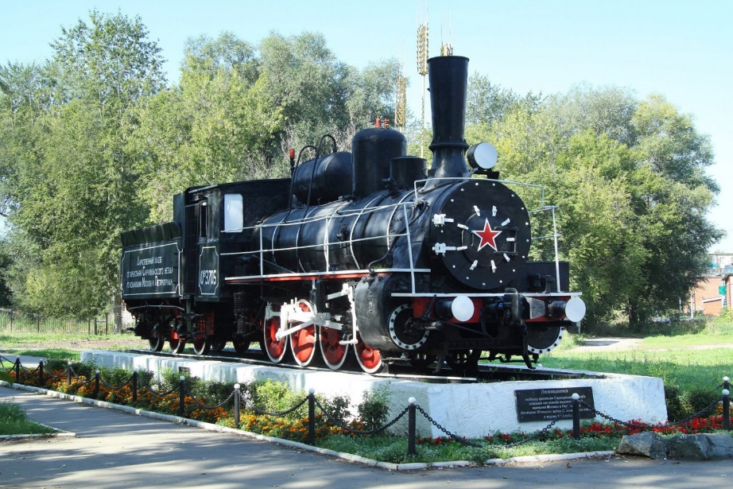
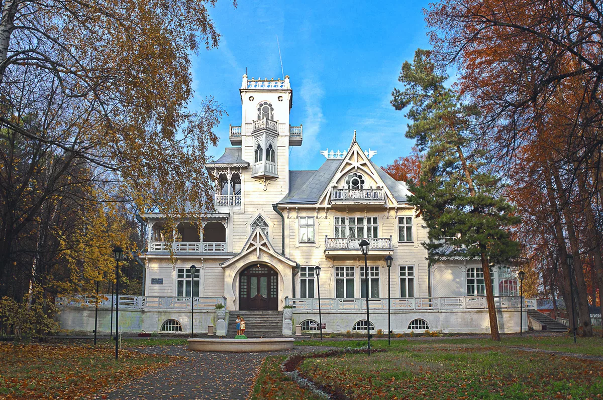

Памятник первой женщине-офицеру Надежде Дуровой.
Памятник первой женщине-офицеру Надежде Дуровой.
Памятник был установлен в Сарапуле летом 2014 года. В это время отмечалось двести лет с того момента, как русская армия, выгнав Наполеона из России начала свой Европейский поход.

Паровоз-памятник Ов 3705
Паровоз-памятник Ов 3705 установлен в честь местных крестьян, которые в 1919 г отправили в Москву и Питер 80 пудов хлеба. На тендере написано: «Дарственный хлеб от крестьян Сарапульского уезда голодающим Москвы и Петрограда»

Баржи смерти
Баржи смерти - наименование плавучих тюрем, использовавшихся в ходе Гражданской войны в России обеими основными противоборствующими сторонами для массового содержания пленных и задержанных.

Дача Башенина
Проектом строительства занимался 30-летний Московский архитектор Павел Трубников. Дачу возводили в модном по тем временам стиле модерн.